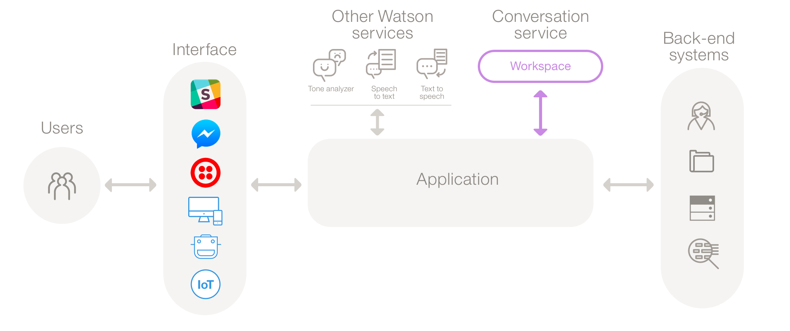
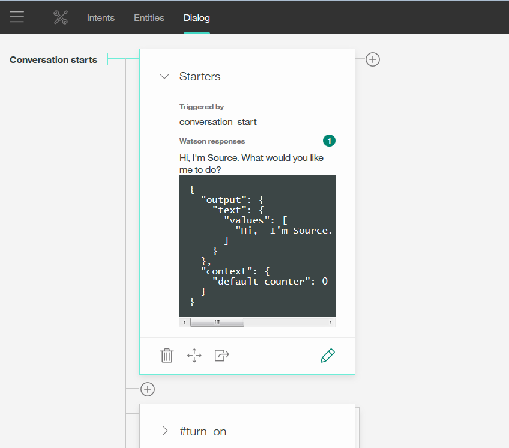

Conversations
Posted on Fri 20 January 2017 in Learning
Let's talk about Chatbots

-
Users interact with the application built (by the client) that you implement.
-
The application can be a simple chat window or a mobile app, or even a robot with a voice interface.
The application sends the user input to the Conversation service.
-
The application connects to a workspace, which is a container for your dialog flow and training data.
-
The service interprets the user input, directs the flow of the conversation and gathers information that it needs.
-
You can connect additional Watson services to analyze user input, such as Tone Analyzer or Speech to Text.
The application can interact with your back-end systems based on the user's intent and additional information.
Implementation
The following steps need to be completed for an application:
- Configure a workspace: With the easy-to-use graphical environment, you set up the dialog flow and training data for your application.
- Develop your application :
- You code your application to connect to the Conversation workspace through API calls.
- You then integrate your app with other systems that you need, including back-end systems and third-party services such as chat services or social media.
Starting an application:
-
Log-in to Bluemix, Navigate to Conversation service, Create a Service and launch the tool.
-
Create Workspace :
3. Create Intents:
An intent represents the purpose of a user's input.
You can thinkg of intents as actions your users might want to perform with your application.
For example:
#hello or `#goodbye.
4. Building a Dialog:
A dialog defines the flow of your conversation in the form of a logic tree. Each node of the tree has a condition that triggers it, based on user input.

The whole conversation flow is directed using Dialogs.
5. Let's refine it!:
An entity definition includes a set of entity values that can be used to trigger different responses.
@entity
Each entity value can have multiple synonyms, which define different ways that the same value might be specified in user input.
Intents
Planning your intents:
Consider what your customers might want to do, and what the application is able to handle.
Choosing the correct intent for a user's input is the first step in providing a useful response.